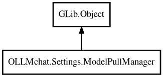

ModelPullManager
Object Hierarchy:

Description:
public class ModelPullManager : Object
Manages background pull operations for models.
Handles status tracking, persistence, rate-limited UI updates, and retry scheduling. Delegates actual pull execution to
ModelPullManagerThread.
Since:
1.3.4
Content:
Properties:
Creation methods:
Methods:
- public Set<string> get_active_pulls ()
Gets all models that are currently being pulled.
- public bool is_pulling (string model_name)
Checks if a pull is currently in progress for a model.
- public bool start_pull (string model_name, Connection connection)
Starts a background pull operation for a model.
Signals:
- public signal void model_complete (string model_name)
Signal emitted when a model pull completes successfully.
- public signal void model_failed (string model_name)
Signal emitted when a model pull fails after all retries are
exhausted.
- public signal void progress_updated (LoadingStatus status)
Signal emitted when pull progress updates.
Inherited Members:
All known members inherited from class GLib.Object
- @get
- @new
- @ref
- @set
- add_toggle_ref
- add_weak_pointer
- bind_property
- connect
- constructed
- disconnect
- dispose
- dup_data
- dup_qdata
- force_floating
- freeze_notify
- get_class
- get_data
- get_property
- get_qdata
- get_type
- getv
- interface_find_property
- interface_install_property
- interface_list_properties
- is_floating
- new_valist
- new_with_properties
- newv
- notify
- notify_property
- ref_count
- ref_sink
- remove_toggle_ref
- remove_weak_pointer
- replace_data
- replace_qdata
- set_data
- set_data_full
- set_property
- set_qdata
- set_qdata_full
- set_valist
- setv
- steal_data
- steal_qdata
- thaw_notify
- unref
- watch_closure
- weak_ref
- weak_unref